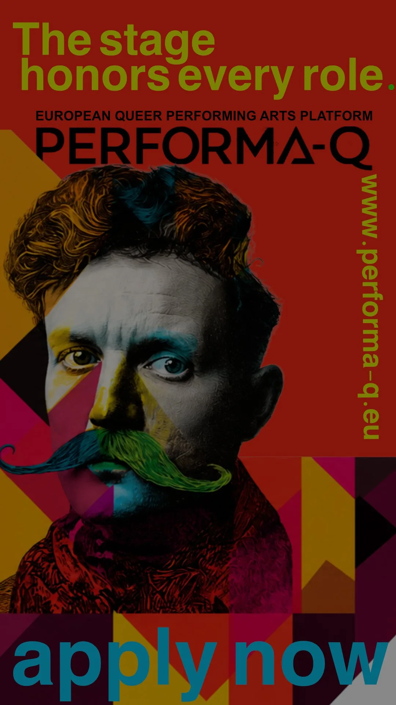

Open Call · Cycle 1 · Residency programme
Step onto a stage built for you and with you
–Days
–Hours
–Min
–Sec

The invitation
Untold and erased queer stories
Open Call – Cycle 1 of the PERFORMA-Q residency programme invites performing artists, directors, playwrights and collectives whose work confronts queer identity and marginalisation in and from Europe's periphery. We are looking for bold voices ready to reclaim erased histories, challenge dominant narratives, and carve out space for stories that rarely reach the spotlight.
The residency, running October 2026 – April 2027, offers time, care and resources to develop performance projects that center queer lives, struggles and joys at the edges of Europe. Applications are open until 31 July 2026, and we especially welcome proposals that experiment with form, language and collaboration.
If your practice is rooted in resistance, community and visibility, this call is an invitation to step onto a stage built for you and with you.
Artistic focus
What we are looking for
PERFORMA-Q is dedicated to experimental and politically engaged performance practices that question dominant narratives and open space for queer imaginaries: performance, live art, choreography, expanded dramaturgy and hybrid forms crossing stage, visual arts, sound and digital media. The residency is a laboratory for risk-taking, where process, research and collective reflection are valued as much as finished results.
A central focus is the exploration of queer histories and futures — especially those silenced, fragmented or erased. We are particularly interested in projects that trace minoritized lineages, reclaim forgotten archives, or speculate on alternative queer worlds; works engaging memory, loss, care and resilience, through intimate gestures or bold public interventions.
The residency centres voices from Europe's periphery and other marginalised positions — artists navigating racialized, migrant, working-class, trans, disabled and other intersecting experiences of exclusion. We encourage proposals addressing intersectionality, decolonial perspectives and structural inequalities, not only as themes but through the ways projects are made, shared and organised. Community-based and collaborative practices building alliances across movements, geographies and generations are strongly supported.
If your work is grounded in queer and feminist politics, attentive to power relations, and curious about how performance can reimagine social realities — this call is likely for you.
Practical information
How to apply
| Who can apply | Performing artists, directors, playwrights and artistic collectives — emerging and established — with practices connected to Europe's periphery or meaningfully engaging with its realities. |
|---|---|
| Framework | 18 residencies across three years. This call concerns Cycle 1: October 2026 – April 2027. Each residency offers dedicated time and space, shared facilities, and mentoring matched to project needs. |
| Your application | Concise project description · connection to Europe's periphery or related contexts · goals for the residency · short motivation statement · portfolio or documentation links · brief CVs for key collaborators. |
| Deadline | 31 July 2026 — only complete applications received by the deadline are considered. |
| Selection | Artistic quality · clarity of intent · feasibility within the residency framework · relevance to the programme's focus. Applications from artists with diverse backgrounds, working methods and access needs are encouraged. |
FAQ
Before you ask
Can I apply as a collective?
Yes — collectives are explicitly welcome. Include brief CVs for all key collaborators in the application.
Do I have to be based in one of the partner countries?
No. The programme is oriented toward practices connected to Europe's periphery, including artists based elsewhere whose work meaningfully engages with these realities.
Does my project have to be finished during the residency?
No. Research-driven proposals, long-term inquiries and early-stage experiments are welcome — process is valued as much as finished results. Work-in-progress sharings and public presentations happen within realistic organisational capacities.
What about accessibility?
Basic support for accessibility can be discussed with selected residents within available resources. State your access needs in the application — it has no bearing on selection.
When will I hear back?
Selection follows the July 31 deadline; all applicants will be notified by e-mail. Questions in the meantime — use the contact form.